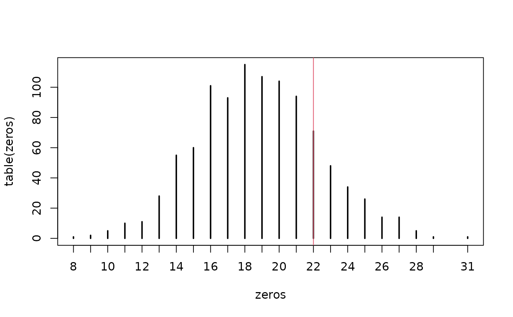

Simulate Responses From merMod Object
simulate.merMod.RdSimulate responses from a "merMod" fitted model object, i.e.,
from the model represented by it.
Usage
# S3 method for class 'merMod'
simulate(object, nsim = 1, seed = NULL,
use.u = FALSE, re.form = NA,
newdata=NULL, newparams=NULL, family=NULL, cluster.rand=rnorm,
allow.new.levels = FALSE, na.action = na.pass, ...)
.simulateFun(object, nsim = 1, seed = NULL, use.u = FALSE,
re.form = NA,
newdata=NULL, newparams=NULL,
formula=NULL, family=NULL,
cluster.rand=rnorm,
weights=NULL, offset=NULL,
allow.new.levels = FALSE, na.action = na.pass,
cond.sim = TRUE, ...)Arguments
- object
(for
simulate.merMod) a fitted model object or (forsimulate.formula) a (one-sided) mixed model formula, as described forlmer.- nsim
positive integer scalar - the number of responses to simulate.
- seed
an optional seed to be used in
set.seedimmediately before the simulation so as to generate a reproducible sample.- use.u
(logical) if
TRUE, generate a simulation conditional on the current random-effects estimates; ifFALSEgenerate new Normally distributed random-effects values. (Redundant withre.form, which is preferred:TRUEcorresponds tore.form = NULL(condition on all random effects), whileFALSEcorresponds tore.form = ~0(condition on none of the random effects).)- re.form
formula for random effects to condition on. If
NULL, condition on all random effects; ifNAor~0, condition on no random effects. See Details.- newdata
data frame for which to evaluate predictions.
- newparams
new parameters to use in evaluating predictions, specified as in the
startparameter forlmerorglmer– a list with componentsthetaandbetaand (for LMMs or GLMMs that estimate a scale parameter)sigma- formula
a (one-sided) mixed model formula, as described for
lmer.- family
a GLM family, as in
glmer.- cluster.rand
Function that generates standardized random cluster effects. The function takes one argument, the number of random values to generate.
- weights
- offset
offset, as in
glmer.- allow.new.levels
(logical) if FALSE (default), then any new levels (or
NAvalues) detected innewdatawill trigger an error; if TRUE, then the prediction will use the unconditional (population-level) values for data with previously unobserved levels (orNAs).- na.action
what to do with
NAvalues in new data: seena.fail- cond.sim
(experimental) simulate the conditional distribution? if
FALSE, simulate only random effects; do not simulate from the conditional distribution, rather return the predicted group-level values- ...
optional additional arguments (none are used in
.simulateFormula)
See also
bootMer for “simulestimate”, i.e., where each
simulation is followed by refitting the model.
Details
ordinarily
simulateis used to generate new values from an existing, fitted model (merModobject): however, ifformula,newdata, andnewparamsare specified,simulategenerates the appropriate model structure to simulate from.formulamust be a one-sided formula (i.e. with an empty left-hand side); in general, iffis a two-sided formula,f[-2]can be used to drop the LHS.The
re.formargument allows the user to specify how the random effects are incorporated in the simulation. All of the random effects terms included inre.formwill be conditioned on - that is, the conditional modes of those random effects will be included in the deterministic part of the simulation. (If new levels are used (andallow.new.levelsisTRUE), the conditional modes for these levels will be set to the population mode, i.e. values of zero will be used for the random effects.) Conversely, the random effect terms that are not included inre.formwill be simulated from - that is, new values will be chosen for each group based on the estimated random-effects variances. The default behaviour (usingre.form=NA) is to condition on none of the random effects, simulating new values for all of the random effects.For Gaussian fits,
sigmaspecifies the residual standard deviation; for Gamma fits, it specifies the shape parameter (the rate parameter for each observation i is calculated as shape/mean(i)). For negative binomial fits, the overdispersion parameter is specified via the family, e.g.simulate(..., family=negative.binomial(theta=1.5)).For binomial models,
simulate.formulalooks for the binomial size first in theweightsargument (if it's supplied), second from the left-hand side of the formula (if the formula has been specified in success/failure form), and defaults to 1 if neither of those have been supplied. Simulated responses will be given as proportions, unless the supplied formula has a matrix-valued left-hand side, in which case they will be given in matrix form. If a left-hand side is given, variables in that expression must be available innewdata.For negative binomial models, use the
negative.binomialfamily (from the MASS package) and specify the overdispersion parameter via thetheta(sic) parameter of the family function, e.g.simulate(...,family=negative.binomial(theta=1))to simulate from a geometric distribution (negative binomial with overdispersion parameter 1).cluster.randallows one to test effects of departures from normality for the distribution of cluster random effects, for example by using a heavy-tailed distribution or a mixture distribution. One can also use a truncated normal to investigate true or false flagging rates; in that case the generated effects will not have a mean of 0 and standard deviation of 1; they are still considered standardized in that the simulation will multiply them by the estimated standard deviation of the cluster random effects.
Examples
## test whether fitted models are consistent with the
## observed number of zeros in CBPP data set:
gm1 <- glmer(cbind(incidence, size - incidence) ~ period + (1 | herd),
data = cbpp, family = binomial)
gg <- simulate(gm1,1000)
zeros <- sapply(gg,function(x) sum(x[,"incidence"]==0))
plot(table(zeros))
abline(v=sum(cbpp$incidence==0),col=2)

##
## simulate from a non-fitted model; in this case we are just
## replicating the previous model, but starting from scratch
params <- list(theta=0.5,beta=c(2,-1,-2,-3))
simdat <- with(cbpp,expand.grid(herd=levels(herd),period=factor(1:4)))
simdat$size <- 15
simdat$incidence <- sample(0:1,size=nrow(simdat),replace=TRUE)
form <- formula(gm1)[-2] ## RHS of equation only
simulate(form,newdata=simdat,family=binomial,
newparams=params)
#> sim_1
#> 1 1
#> 2 1
#> 3 0
#> 4 1
#> 5 1
#> 6 1
#> 7 1
#> 8 1
#> 9 1
#> 10 1
#> 11 1
#> 12 0
#> 13 1
#> 14 1
#> 15 1
#> 16 0
#> 17 0
#> 18 0
#> 19 1
#> 20 0
#> 21 1
#> 22 0
#> 23 1
#> 24 1
#> 25 1
#> 26 1
#> 27 1
#> 28 0
#> 29 1
#> 30 1
#> 31 0
#> 32 0
#> 33 0
#> 34 0
#> 35 0
#> 36 0
#> 37 1
#> 38 0
#> 39 1
#> 40 1
#> 41 1
#> 42 1
#> 43 0
#> 44 1
#> 45 1
#> 46 0
#> 47 0
#> 48 0
#> 49 0
#> 50 1
#> 51 0
#> 52 0
#> 53 1
#> 54 1
#> 55 0
#> 56 0
#> 57 0
#> 58 0
#> 59 0
#> 60 0
## simulate from negative binomial distribution instead
simulate(form,newdata=simdat,family=negative.binomial(theta=2.5),
newparams=params)
#> sim_1
#> 1 11
#> 2 2
#> 3 7
#> 4 6
#> 5 18
#> 6 8
#> 7 47
#> 8 11
#> 9 6
#> 10 25
#> 11 7
#> 12 7
#> 13 1
#> 14 14
#> 15 2
#> 16 9
#> 17 1
#> 18 0
#> 19 1
#> 20 0
#> 21 3
#> 22 1
#> 23 2
#> 24 2
#> 25 9
#> 26 2
#> 27 7
#> 28 0
#> 29 3
#> 30 6
#> 31 5
#> 32 1
#> 33 0
#> 34 0
#> 35 0
#> 36 0
#> 37 9
#> 38 1
#> 39 0
#> 40 1
#> 41 3
#> 42 0
#> 43 1
#> 44 6
#> 45 1
#> 46 1
#> 47 1
#> 48 1
#> 49 0
#> 50 0
#> 51 0
#> 52 2
#> 53 0
#> 54 0
#> 55 0
#> 56 0
#> 57 0
#> 58 0
#> 59 1
#> 60 0